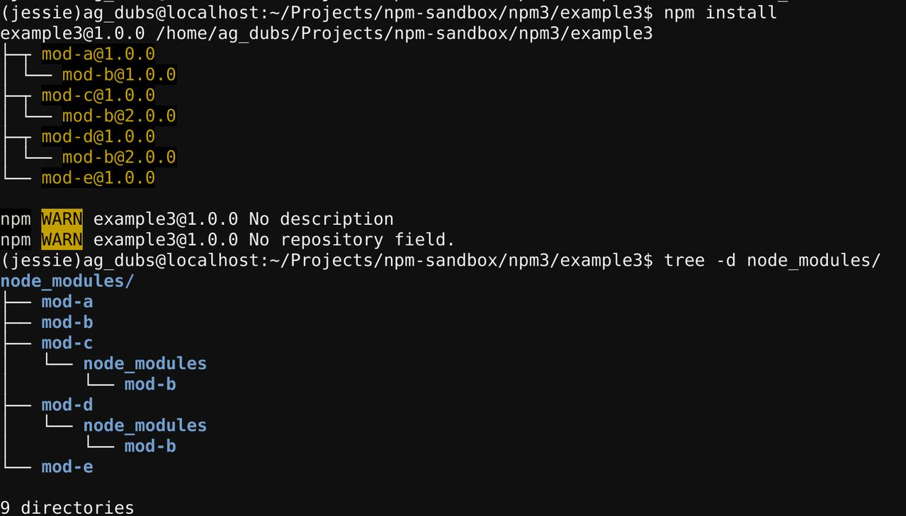

As stated a few pages back in our example:

If you, and your development team, use a package.json, as well
as the interactive npm install command to add pkgs (like most
teams using npm do), it is likely that you will run into a situation
where your local node_modules directory will differ from both
your coworkers' node_modules directories, as well as the node_modules
directories on your staging, testing, or production servers.
In short? npm3 does not install dependencies in a deterministic way.
That's probably not a comforting statement to read, but in this article
we'll discuss why this happens, as well as assure you that it has no
implications for your application, as well as explain the steps to
reliably (re)create a single, consistent, node_modules directory, should
you want to do that.
Let's jump back to an example application from a few examples ago:

In this example, our app has the following package.json:
{ "name": "example3", "version": "1.0.0", "description": "", "main": "index.js", "scripts": { "test": "echo \"Error: no test specified\" && exit 1" }, "keywords": [], "author": "", "license": "ISC", "dependencies": { "mod-a": "^1.0.0", "mod-c": "^1.0.0", "mod-d": "^1.0.0", "mod-e": "^1.0.0" }}On an npm install we will see this in our terminal:

Now, let's say a developer on our team decides to complete a feature that requires that they update Module A to v2.0, which now has a dependency on Module B v2.0, instead of, as previously, Module B v1.0.

Our developer uses the interactive npm install command to install the new
version of Module A, and save it to the package.json:
npm install mod-a@2 --saveThe terminal outputs this:

We now have something that looks like this:

Now let's say that our developer finished the feature requiring the new
version of Module A and pushes the application to a testing server
that runs npm install on the new package.json:
{ "name": "example3", "version": "1.0.0", "description": "", "main": "index.js", "scripts": { "test": "echo \"Error: no test specified\" && exit 1" }, "keywords": [], "author": "", "license": "ISC", "dependencies": { "mod-a": "^2.0.0", "mod-c": "^1.0.0", "mod-d": "^1.0.0", "mod-e": "^1.0.0" }}The testing server's log shows this:

Which, when visualized, looks like this:

Whoa, what?! This tree is completely different than the tree that exists on our developer's local machine. What happened?
Remember: install order matters.
When our developer updated Module A using the interactive npm install
Module A v2.0 was functionally the last package installed. Because
our developer had done an npm install when they first started working
on the project, all modules listed in the package.json were already
installed in the node_modules folder. Then Module A v2.0 was
installed.
It follows, then, that Module Bv1.0, a top level dependency because of Module A v1.0, then anchored by Module E v1.0, remains a top level dependency. Because Module Bv1.0 occupies the top-level, no other version of Module B can-- therefore, Module Bv2.0 remains a nested dependency under Module C v1.0 and Module D v1.0, and becomes a nested dependency for the new Module A v2.0 dependency.
Let's consider what happened on the testing server. The project was pulled
into a fresh directory, i.e. does not have a pre-existing node_modules
directory. Then npm install is run, perhaps by a deploy script, to install
dependencies from the package.json.
This package.json now has Module A v2.0 listed in it, and thanks to
alphabetical order (enforced by the npm install command), is now installed
first, instead of last.
When Module A v2.0 is installed first, in a clear node_modules directory, its
dependencies are the first candidates for the top-level position. As a result,
Module B v2.0 is installed in the top-level of the node_modules directory.
Now, when it is time to install Module E v1.0, its dependency, Module B v1.0,
cannot occupy the top-level of the node_modules directory, because Module B v2.0
is already there. Therefore, it is nested under Module E v1.0.
No! Even though the trees are different, both sufficiently install and point all your dependencies at all their dependencies, and so on, down the tree. You still have everything you need, it just happens to be in a different configuration.
node_modules directory to be the same. How can I do that?The npm install command, when used exclusively to install packages from a
package.json, will always produce the same tree. This is because install order
from a package.json is always alphabetical. Same install order means that
you will get the same tree.
You can reliably get the same dependency tree by removing your node_modules
directory and running npm install whenever you make a change to your package.json.
Last modified December 30, 2015 Found a typo? Send a pull request!